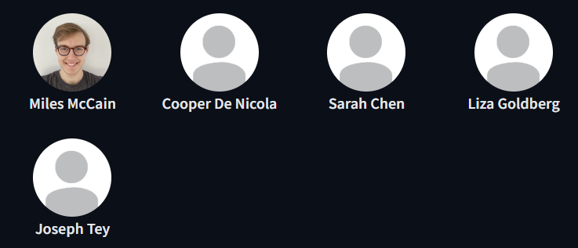
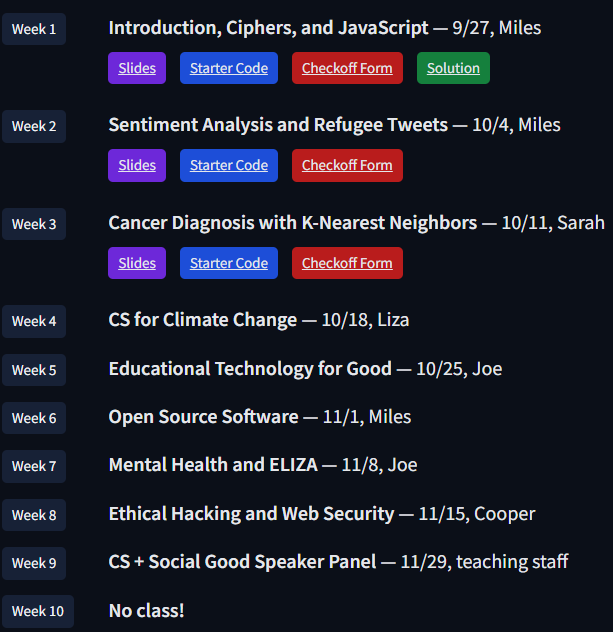

CS106S
Coding for Social Good
CS 106S is a survey course on the applications of fundamental computer science concepts from CS 106B to problems in the social good space (such as health, government, education, and environment). Each week consists of in-class activities designed by student groups, local tech companies, and nonprofits. Some of the topics we will cover include mental health chatbots, tumor classification with basic machine learning, sentiment analysis of tweets on refugees, and the ethical obligation of good security. Recommended prerequisite/corequisite: CS 106B.
News
Welcome to CS106S! Our first class will be Tuesday September 27, 2022 at 4:30 P.M. PT in 540-108.
While CS 106S does not have a waitlist, we encourage all interested students to attend the first class; historically, we have not had to turn students away from CS 106S for enrollment reasons.
Course Details
Welcome to CS106S! Our first class will be Tuesday September 27, 2022 at 4:30 P.M. PT in 540-108. While CS 106S does not have a waitlist, we encourage all interested students to attend the first class; historically, we have not had to turn students away from CS 106S for enrollment reasons.
- Awareness:For students to gain awareness about the applicability of technology and computer science to enact social good in the world.
- Exposure:For students to learn how to utilize their skills to build tools and projects that create positive social impact.For students to learn how to utilize their skills to build tools and projects that create positive social impact.
- Utilization: For students to gain exposure to the variety of current projects and efforts to use computer science for social good.
Now, let's get into some important details: expectations, grading, and meeting time!
Student Expectations
Welcome to CS106S! Our first class will be Tuesday September 27, 2022 at 4:30 P.M. PT in 540-108. While CS 106S does not have a waitlist, we encourage all interested students to attend the first class; historically, we have not had to turn students away from CS 106S for enrollment reasons.
Students are expected to attend class each week and participate in class lectures, discussions, and exercises. Every week will have a check-off form with some simple questions from class and feedback prompts for the teaching team; we leave time at the end of class for you to complete the check-off form (and we expect it to take no more than five minutes), and will close at 11:59pm the day of class. This will be the way we check your attendance.
Grading
Students will be graded on the basis of attendance and participation. Participation and attending a minimum of 8 out of 9 classes are requirements to receive credit. In the case that a student will miss more than one class due to extenuating circumstances, please contact the teaching staff to receive an excused absence (e.g., illness). If you miss class, please email us! We understand that life can be complicated, and can provide excused absences when necessary. We will always create a path for you to pass CS 106S — but we promise that the easiest way will be just to come to class.
Meeting Time & Coursework
CS106S will meet every Tuesday afternoon from 4:30p to 6:30p PT in 540-108. Students will receive 1 unit of S/NC credit. Except in cases where students miss class (which we will handle on a case by case basis), no work will be required outside of our class meetings.
Auditing
We welcome auditors! Send an email to cs106s-aut2223-staff@lists.stanford.edu to be added to the mailing list. Because CS 106S is offered in-person (and lectures are not recorded), only on-campus Stanford students can attend. That being said, anyone may use our digital materials. (And feel free to email us if you think we forgot to post something!)
Stanford Policies
All students are expected to abide by Stanford’s Honor Code and to wear a mask if attending in-person.
Students with Documented Disabilities
Students who may need an academic accommodation based on the impact of a disability must initiate the request with the Office of Accessible Education (OAE). Professional staff will evaluate the request with required documentation, recommend reasonable accommodations, and prepare an Accommodation Letter for faculty dated in the current quarter in which the request is being made. Students should contact the OAE as soon as possible since timely notice is needed to coordinate accommodations. The OAE is located at 563 Salvatierra Walk (phone: 650-723-1066)
Instructors
Questions? Contact us at cs106s-aut2223-staff@lists.stanford.edu!
Syllabus
The syllabus will be posted shortly!
Questions? Contact us at cs106s-aut2223-staff@lists.stanford.edu!
AMA Responses
Each week, we will give you an opportunity to ask us any questions you like about Stanford, CS, Social Good, Javascript, or whatever you like! Our responses will go here.